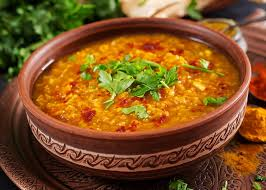

Home
Sambar

This is Sambar.
INGREDIENTS
- Step 1: Cook toor dal (pigeon peas) until soft and mash it.
- Step 2: In a pot, sauté mustard seeds, curry leaves, and chopped onions until golden.
- Step 3: Layer half the rice over the meat, add herbs and spices, then top with the remaining rice.
- Step 4: Stir in tamarind paste, sambar powder, and the mashed dal, then simmer.
- Step 5: Adjust seasoning and serve hot with rice or idli.